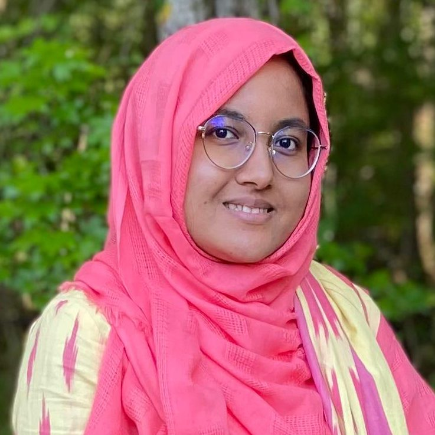

Hydrologist · Water Resources Researcher
I study how rivers, estuaries and coastal landscapes respond to human change and a shifting climate. My work runs from a century of tidal records in the Delaware Estuary to farmers' decisions in Bangladesh's coastal polders.

I am completing an M.Sc. in Geology (Hydrological Sciences) at the University of Florida, where I work as a Graduate Research Assistant with the Megalopolitan Coastal Transformation Hub (MACH). My thesis looks at a century of tidal change in the Delaware Estuary: how dredging and other human modifications reshaped tidal harmonics, and what that means for flooding.
Before UF I spent six years as a Scientific Officer at the River Research Institute in Bangladesh, measuring river levels and bed elevations and writing technical reports on river training and bank protection. Earlier, as an Agricultural Engineer, I trained farmers in water-saving irrigation. I also studied Water Science and Engineering at IHE-Delft in the Netherlands as an Orange Knowledge Program scholar.
Tidal harmonic analysis, long-term water level records, and the effects of channel modification.
Flood-relevant high-water duration, coastal resilience and adaptation in the Global South.
Decision tools for water management, crop choice and food security in coastal polders.
Combined historical image interpretation with geospatial analysis to trace how human modifications changed the Delaware Estuary landscape. Project page
Researched agro-ecosystems and climate adaptation strategies in coastal Bangladesh.
Measured water level and riverbed level data and prepared technical reports.
Trained farmers in water-saving technologies: drip and sprinkler irrigation and buried pipe systems.
Thesis: A Century of Tidal Change in the Delaware Estuary: Anthropogenic Modification, Harmonic Response, and Flood Implications.
Thesis: Crop Decision Making Model and Impacts of Crop Selection on the Livelihood of Farmers in Coastal Areas.
Project: Physical Simulation of Rainfall-Runoff System by a Hydrology Bench.
Bengali (native) · English (professional)
I'm open to research collaborations and roles in hydrology, coastal resilience and water resources management.
Based in Florida, US